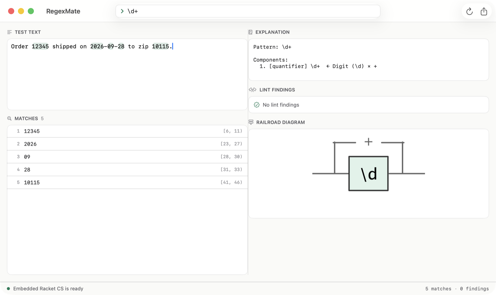
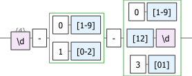

一条安静的 CLI 包办所有正则工作——校验、匹配、解释、替换、绘图、测试、风险分析。对 agent 说 JSON，对你说人话，还会自己更新。
Rivet 重构进行中——当前 v1.x（CLI + GUI）继续可用、照常维护。
免装运行时

工作台
所有命令共用同一套版本化 JSON——schema、command、ok——绝对区间、从 1 计数的捕获组。人类得到安静的输出，agent 得到结构，版本变更绝不悄悄破坏契约。
为智能体
退出码有语义、错误保持单行、缺席组是 null 而非缺键。任何工具循环直接接入。
{
"schema": "regexmate/v1",
"command": "match",
"ok": true,
"matches": [{
"value": "a@b", "start": 5, "end": 8,
"groups": [{ "index": 1, "value": "a" }, …]
}]
}为人类
接手一个不敢信的正则？explain 逐段讲清楚——英文或中文。
迭代
正反用例批量断言；lint 抓住 ReDoS 与死分支，--strict 做成 CI 门禁。
原生
每个平台的发布包都带 regexmate-gui——原生桌面应用（SwiftUI / WinUI 3 / GTK4），边输入边求值：匹配直接高亮在样本文字里，旁有解释、lint 与实时铁路图。与 CLI 同一核心、进程内嵌——无服务、无 Electron。
保持最新
一条命令拉取最新发布、验证 Ed25519 签名的更新清单与下载校验和、运行中原地换装。
可发现
契约可从二进制直接机读——命令、旗标、退出码、MCP 工具。
图解
graph 把任意正则变成铁路图，用于规格文档和代码评审。这张就是工具自己的输出。

regexmate graph '\d{4}-(0[1-9]|1[0-2])-(0[1-9]|[12]\d|3[01])'智能体
七个带输入 schema 的工具，走 stdio JSON-RPC。配置里加一段即可——零胶水代码。
{
"mcpServers": {
"regexmate": {
"command": "regexmate",
"args": ["mcp"]
}
}
}0 | 成功——有匹配 / 语法有效 / 完成替换 |
1 | 正则表达式无效 |
2 | 用法错误（错误选项、未知命令） |
3 | 语法有效但零匹配 / 零替换 / 用例失败 |
文本可来自参数或 stdin。支持 NO_COLOR 与 REGEXMATE_LANG；--lang 切换输出语言。
区间为绝对下标、[start, end) 半开。捕获组从 1 计数；缺席组是 null——绝不缺键。
安装
已在用 Racket？直接从仓库安装。
raco pkg install https://github.com/turinglambdaai/regexmate.git
克隆、测试、构建自己的二进制。三条命令，Racket 9.x。
racket run-tests.rkt
raco exe -o regexmate main.rkt
接下来